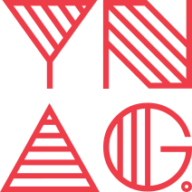

熟练运用Photoshop与Sketch输出高质量创意性界面视觉呈现；关注设计前沿、重视用户体验，充分理解产品需求，具有同理心，针对行业特性与产品属性完成不一样的创意设计，提升产品辨识度，掌握马克鳗、蓝湖等软件，提升工作效率



嗨！我是杨林川。 一位UI/UX设计人员，我非常热情并且致力于我的工作。作为专业的UI/UX设计人员，我拥有10年的设计经验，并且懂得前端代码， 我已经掌握了使您项目成功的必要技能和知识。 从讨论、协作到概念和执行，我喜欢设计过程的每个步骤，解决具有挑战性的设计问题，对有趣的交互进行原型设计，学习新事物以及充实细节。
设计灵感、产品思维与前端编码三者相结合，不仅是由不局限于软件应用设计的偏安一隅而引起的，还由于其不懈的好奇心；国画中有句“画虎先画骨”，对应到设计上也是一样，视觉效果是一张皮，产品原型与前端代码是支撑这张皮的脉络与骨骼，了解脉络与骨骼是怎么生长的，有助于降低项目沟通成本，加速项目进行，设计出更高效合理的页面。
熟练运用Photoshop与Sketch输出高质量创意性界面视觉呈现；关注设计前沿、重视用户体验，充分理解产品需求，具有同理心，针对行业特性与产品属性完成不一样的创意设计，提升产品辨识度，掌握马克鳗、蓝湖等软件，提升工作效率
使用Illustrator根据不同产品特性与用户使用场景、功能点属性自行绘制专属图标与插画
能用AE与Principle输出具有交互效果的原型，运用动效呈现一种渐进式的交互体验，方便开发人员编码，提升用户体验，吸附用户眼球
运用Axure与墨刀迅速构建产品原型，快速理解产品逻辑，着重从产品需求解决入手，提出自己的见解与解决方案，针对产品市场走向与时俱进，时时抓住用户人群痛点
懂得HTML5并完成前端编码，关注前端行业发展动态，在设计的同时重视性能优化，明白天马行空的设计方案有无可能跃然于设备之上，让创意与编码实现齐飞
运用CSS3作为交互动效的补充，编写过渡动画效果，编码实现交互原型，将动效构思用于实际开发，提升用户体验
“当人们的空间被各种物资挤压的时候，也就失去了本质，我们要去掉一切虚假的、表面的、无用的东西， 而剩下真实的、本质的、必不可少的东西，因而得到更多的空间、更多的舒适、更多的效率、更多的美”
“设计是恒久的，在经过很长一段岁月后仍然具有耐看的质感”
“保持低调，一直专注于最终目标，直到成功为止”